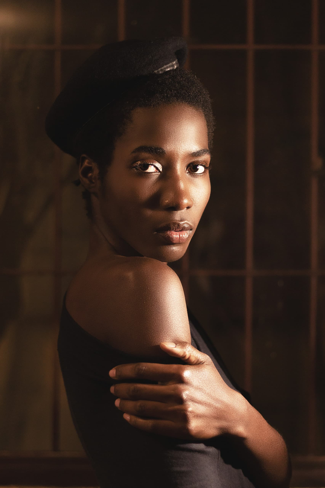
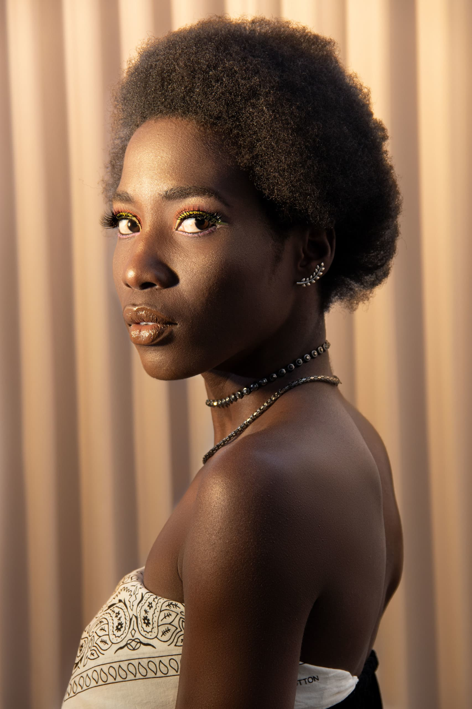
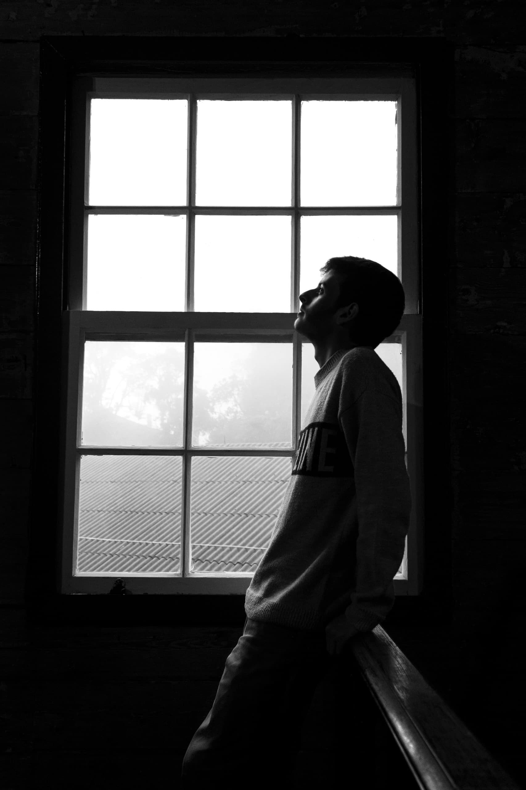

Trabalhos feitos por Fabriccio Braga, localizado em Osasco(SP).
A fotografia é uma maneira de sentir, tocar e amar. É uma arte de observação para encontrar algo interessante em um lugar simples.Elas capturam um momento que se foi para sempre, e não irá retornar mais.Fabriccio Braga
- 
- 
- 